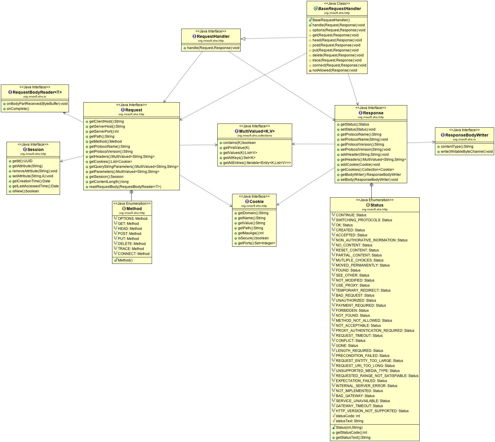
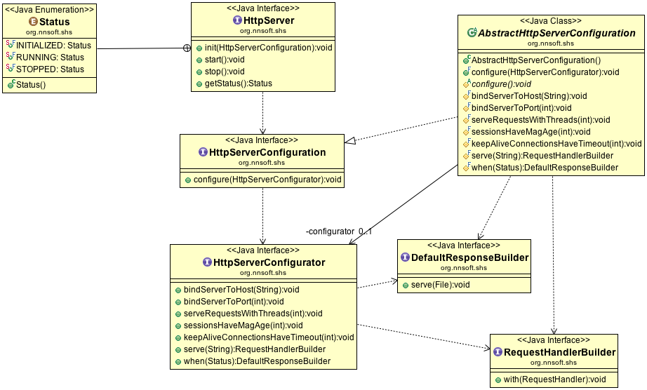

The Simple HttpServer aims to provide web developers not just a server able to serve files over the HTTP protocol, but rather an API set to develop complete Web applications
The HTTP model APIs takes inspiration from the Servlet model, simplifying it keeping off all the container related features, just pure HTTP protocol:
Main entities are the Request and Response: they both are arguments of the RequestHandler wich is the entity responsible for the HTTP negotiation. A commodity BaseRequestHandler is provided in order to simplify the HTTP method handling, such as GET or POST, where users can implement the interested method handling.
Both Request and Response manipulate HTTP Headers as a MultiValued collection, a read-only key-value data structure where for each key can be associated more than one value. Request query string parameters and form-urlencoded parameters are implemented as MultiValued as well.
One of the Simple HttpServer ambitions is eliminating the boilerplate code to configure server instances, keeping off from the core implementation plain old textual configuration files, such as Properties or XML, and letting the server be configured with a pure Java mini EDSL (that of course can be proxed by testual representations).
Users implement HttpServerConfiguration, the HttpServer passes a HttpServerConfigurator to user configuration, and user configuration uses the configurator to map path patterns to RequestHandlers.
public class MyServerConfiguration implements HttpServerConfiguration { private final File siteDir = new File( System.getProperty( "user.dir" ), "site" ); public void configure( HttpServerConfigurator configurator ) { configurator.bindServerToHost( "localhost" ); configurator.bindServerToPort( 8080 ); configurator.serveRequestsWithThreads( 10 ); configurator.sessionsHaveMagAge( 60 * 60 ); configurator.serve( "/*" ).with( new FileRequestHandler( siteDir ) ); configurator.when( Response.Status.NOT_FOUND ).serve( new File( siteDir, "404.html" ) ); configurator.when( Response.Status.INTERNAL_SERVER_ERROR ).serve( new File( siteDir, "500.html" ) ); } }The configuration allows users specify:
DRY (Don't Repeat Yourself): Repeating configurator over and over for each configure step can get a little tedious. The Simple HttpServer package provides a support class named AbstractHttpServerConfiguration which implicitly gives you access to HttpServerConfigurator's methods.
For example, extending AbstractHttpServerConfiguration and rewrite the above binding as:
public class MyServerConfiguration
extends AbstractHttpServerConfiguration
{
private final File siteDir = new File( System.getProperty( "user.dir" ), "site" );
protected void configure()
{
bindServerToHost( "localhost" );
bindServerToPort( 8080 );
serveRequestsWithThreads( 10 );
sessionsHaveMagAge( 60 * 60 );
serve( "/*" ).with( new FileRequestHandler( siteDir ) );
when( Response.Status.NOT_FOUND ).serve( new File( siteDir, "404.html" ) );
when( Response.Status.INTERNAL_SERVER_ERROR ).serve( new File( siteDir, "500.html" ) );
}
}We'll use this syntax throughout the rest of the guide.
We can break HttpServer's 3 architecture down into three distinct stages: startup, runtime and stop.